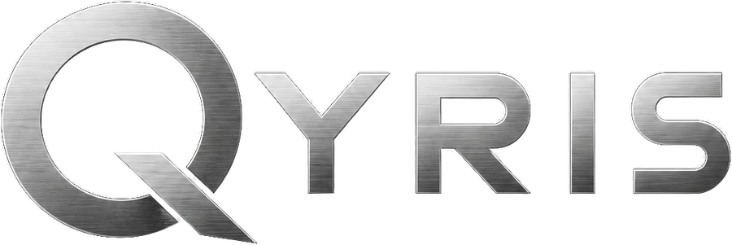

Structurer votre discours, trouver les bons arguments, répondre aux questions.
Un pitch, c'est un exercice d'équilibre : dire ce qu'il faut, dans le bon ordre, en peu de temps, face à quelqu'un qui ne connaît pas votre projet. Que vous prépariez une présentation devant des investisseurs, un entretien pour un stage, ou simplement la façon d'expliquer votre idée à un client potentiel, la structure fait toute la différence. L'IA peut vous aider à construire cette structure, tester vos arguments et vous préparer à ce qui va venir.
Avant de construire quoi que ce soit, décrivez votre projet à l'IA avec le plus de détails possible : ce que vous proposez, à qui, quel problème vous résolvez, ce que vous avez déjà fait. Ne filtrez pas, ne rédigez pas encore. Donnez-lui la matière brute. Elle va vous poser des questions pour clarifier ce qui manque et vous aider à identifier l'essentiel : le problème central, la solution, et ce qui rend votre approche crédible. C'est ce noyau qui va porter tout le reste.
La première phrase d'un pitch décide souvent de la suite. Demandez à l'IA de vous proposer plusieurs façons d'ouvrir : par le problème que vous résolvez, par un chiffre qui illustre l'enjeu, ou par une situation concrète à laquelle votre interlocuteur peut s'identifier. Testez plusieurs formulations et choisissez celle qui vous ressemble. L'objectif n'est pas de trouver une accroche marketing, mais une entrée en matière qui rende votre sujet immédiatement compréhensible et intéressant.
Une fois l'angle choisi, demandez à l'IA de vous proposer un plan pour un pitch de la durée que vous avez : deux minutes, cinq minutes, dix minutes. Elle adapte la densité selon le temps disponible et s'assure que les grandes parties s'enchaînent logiquement : le contexte, le problème, votre solution, ce qui vous rend crédible, et ce que vous demandez. Vous pouvez ensuite lui demander de rédiger une version complète à partir de ce plan, que vous affinerez avec vos propres mots.
La partie la plus redoutée d'un pitch, c'est souvent ce qui vient après. Demandez à l'IA de jouer le rôle d'un interlocuteur exigeant et de vous poser les questions qu'elle anticipe : sur votre modèle économique, sur vos concurrents, sur vos hypothèses de croissance, sur vos faiblesses. Répondez à chaque question, puis demandez-lui de vous dire si votre réponse est convaincante. Cet exercice révèle les angles morts de votre discours avant que vous ne vous retrouviez en situation réelle.
Un bon pitch ne s'écrit pas en une fois. Après avoir une première version, lisez-la à voix haute. Revenez à l'IA pour signaler ce qui sonne faux, ce qui est trop long, ce que vous avez du mal à dire naturellement. Elle peut reformuler des passages entiers pour qu'ils correspondent mieux à votre façon de parler. L'objectif final est un texte que vous n'avez plus besoin de réciter, parce qu'il est suffisamment proche de votre langage naturel pour s'adapter à n'importe quel échange.